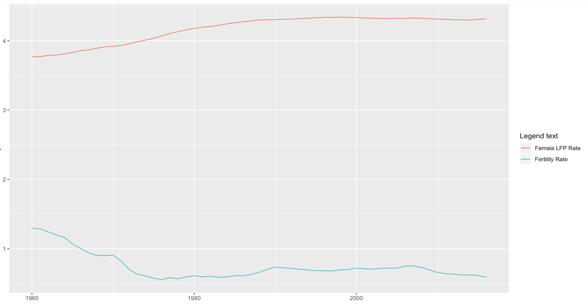

Trends in Labor Force Participation Among Women
- The is an inverse relationship between the rates of female labor force participation and fertility. As rates of participation increase from 1960-2017, the number of children per woman in the U.S. decrease.
- Though this data demonstrates a correlation between the trends of the rates, it is unclear which is the impact variable, meaning, do women choose to have less children because of workforce participation, or do the social implications of having fewer children allow women to participate increasingly in the workforce?
- Fertility rates and participation rates were converted to log values in this analysis, as to standardize the data and analyze the variance in each.
U.S. Rates of Female LFP vs. Fertility
